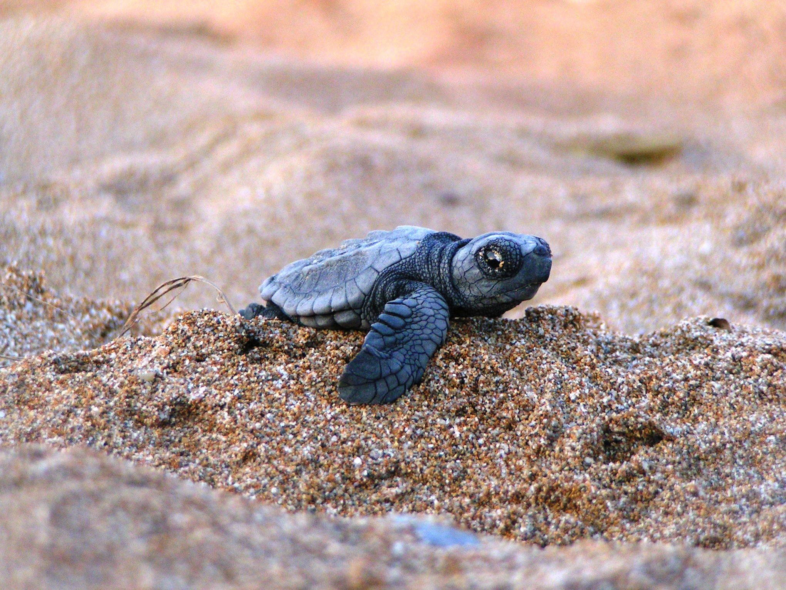

They are endangered because of habitat loss, poaching and
entanglement in fishing nets and ingestion of debris in the ocean.
2. Red Panda
The reason for the red pandas being endangered is because of
destruction of their habitat. For example, the trees are being cut down
and cleared near their habitat.
3. Orangutan
The Orungatan is suffering from deforestation in its natural
habitat. Its population has dropped byover half in the last 60
years.
4.
Malayan Tiger
The main reason for them being endangered is because of people
illegally hunting them for no reason.
5.
Sumatran Elephant
These elephants suffer from deforestation and habitat loss as a
result of human-elephant conflict.

Now let's continue to ways to save the Earth!
Saving Energy and Electricity
One way to save elctricity is by turning off the light whenever
you are not using it, or even turning of the television whenever you
are not watching the television.
2.
Conserve Water
There are many ways to conserve water for example, you can turn
off the water whem you are not using it and limit the time you use to
take a shower.
3. Reducing
,Reausing,Recyling
Try to Avoid purchasing any food with excess packaging on it.
Most of the time food companies spend just as much time using energy,
creating the food, packaging, then expended in producing in the actual
food.
4.
Changing Your Eating Habits
Eating
Less mea and dariry and more plants,is one way to help the Environment,
and keep your self healthy.you can also try to drink coffe from a
individual-seving coffe pods!Finally plan your meals so that you don't
make more food then you need!.
5.
TravellingWisely
Surprisingly short trips are generally harder on your car and
on the environment than long trips. Swap out your car for your feet or
a bike.
About the
Creators
5 facts about -
Valentina -
I am 12 years old, and going into 7th grade at Hector
Garcia Middle School.
I have been a swimmer since I was 5 and started dancing
when I was 3 but stopped due to more time for swimming.
My favorite subject was always Math and Reading. I
always found those subjects very interesting and would easily get the
hang of it.
My favorite animals are bunnies and turtles!
I have one younger brother named Santiago.
Addison -
I am 11 years old and im going into 6th grade and Great Hearts
Western Hills.
I have 2 sisters and 2 brothers Im the 4th Child born in my
family i also have "4" other sisters .
My favorite Subject is Science , Im a Science neerd !
My favorite animals are Dogs and Turtels!
My Dream Job is To Be a Singer!
This is a video on ways to save the Earth!
This is a video of Team UTSA (us) winning a competition against Team Ohio, we won 3rd place overall!
 Lets start with endangered Animals!
Lets start with endangered Animals!